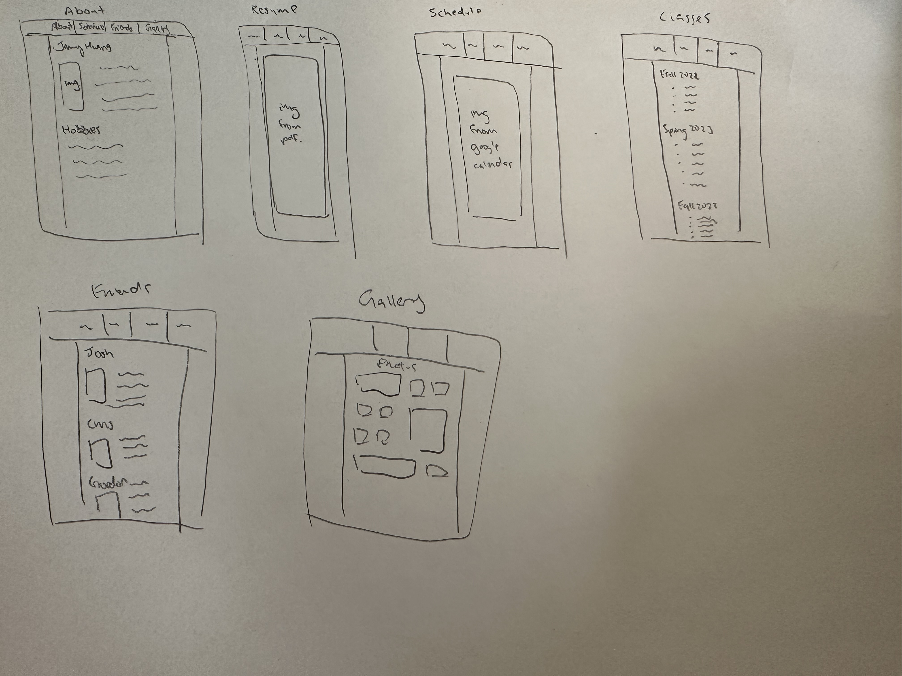

Topic
Discuss what your website is about in 1-2 sentences.
- My website will be a website that shows who I am. It will highlight my life, such as academics, professional, and social.
Audience
Who is your intended audience?
- Anyone who is interested in me.
Design & Style
Discuss design and color scheme in 1-2 sentences.
- The color scheme I wanted was using the USC colors, using the Cardinal as my overall background and gold as my navbar hover colors. The texts in my container will be black font on a white background.
Provide a color palette (primary color, secondary, etc.).
Provide links to 3 websites that inspired your design.
- Who is your intended audience?
Scope
How many pages are you planning to have? What are the pages?
- I am planning to have 4 main pages with 2 subpages. The 4 main pages are: About, Schedule, Friends, and Gallery. The subpages are: Resume (under About), Classes (under Schedule).
Wireframes
